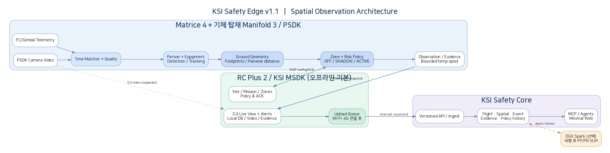
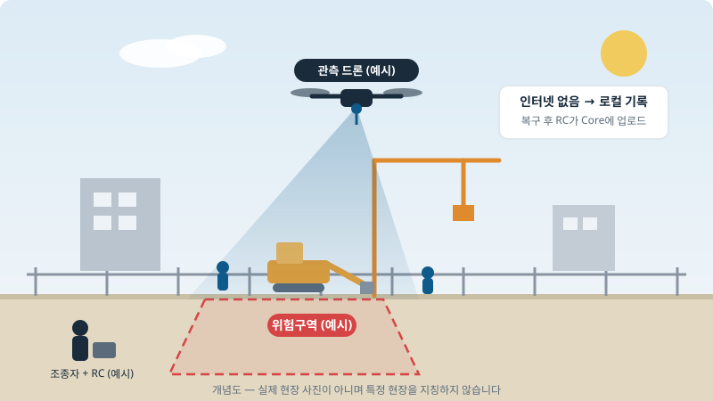
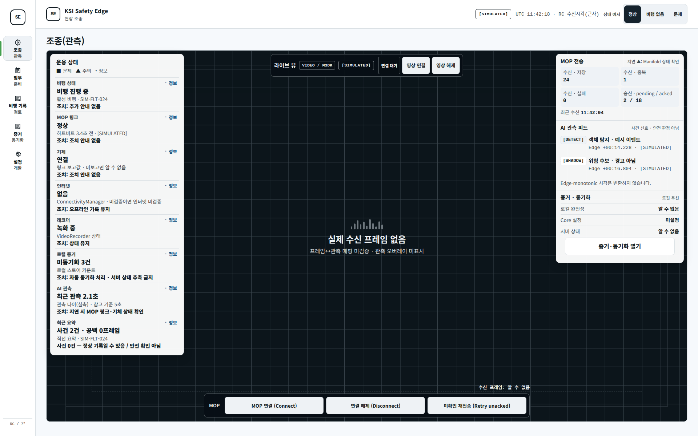
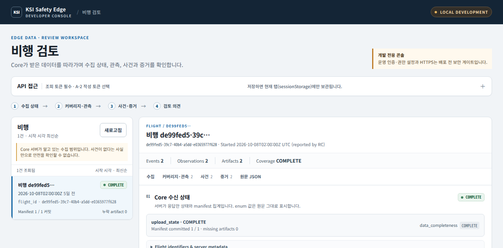
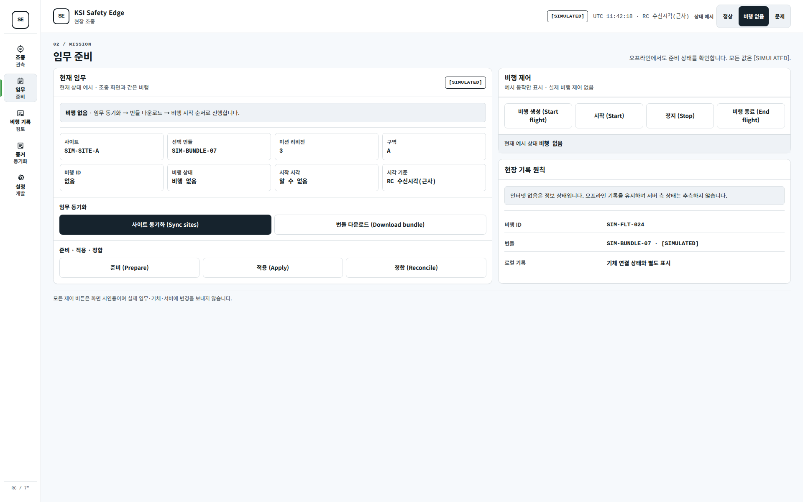
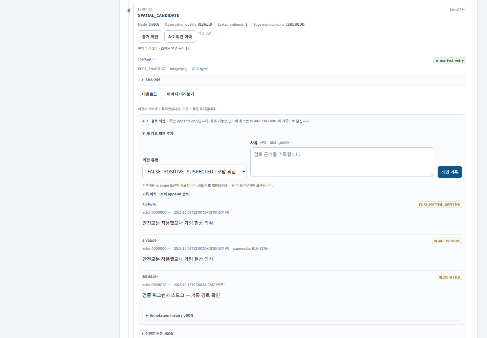
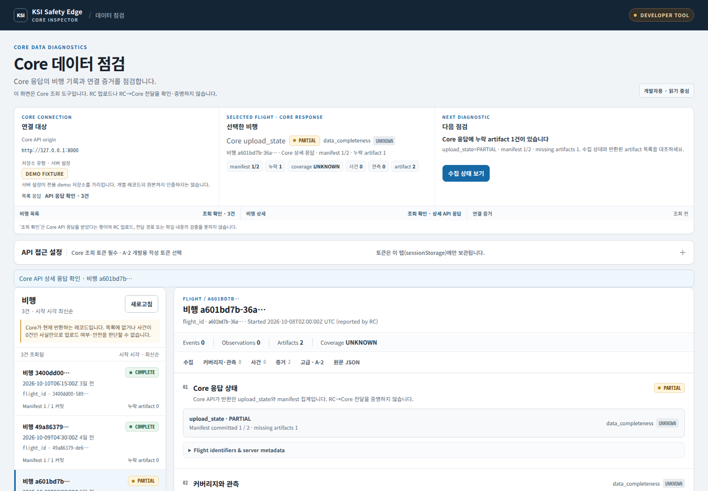

인터넷이 없어도 현장에서 사람·중장비를 관측·기록하고, 연결 복구 후 당시의 설정과 증거를 그대로 재현합니다.
| 구분 | 상태 |
|---|---|
| 재생 시나리오 검증 (E01~E12) | 재생 환경에서 확인 — 사용자 인수 미실시 |
| 실제 기체·RC 검증 | 진행 중 (실기 검증 전) |
| 운영 배포 (인증·권한·HTTPS) | 보안 게이트 준비 전 |
네트워크가 없는 현장에서도 사람·중장비 관측 기록이 끊기지 않고, 연결 복구 후 당시 설정과 증거를 그대로 조회할 수 있어야 합니다.
재생 하네스에서 임무 적용 → 오프라인 기록 → 재시작 복원 → 업로드 → 조회 전 구간과 장애 시나리오(E01~E12)를 재현합니다. Python·C++·Android 3축 CI가 main 푸시마다 실행됩니다.
실제 기체·RC 실기 검증, 사용자 인수, 운영 인증·권한·HTTPS 게이트입니다.
Matrice 4 + Manifold 3. 사람·중장비 탐지·추적·공간 분석 (C++, PSDK, ONNX/TensorRT)
오프라인 기록·미션 적용·복구 후 업로드. 유일한 업로드 주체 (Android MSDK, Kotlin, SQLite WAL)
증거 수집·데이터 점검·의견 기록(개발·검증용) (Python FastAPI)

아래는 설계된 운용 흐름(목표 동작)입니다. RC→Core 전송의 종단간 검증은 별도 절차이며, 실기 검증·사용자 인수 전입니다.
아래는 이해를 돕기 위한 가상 시나리오와 개념도입니다. 특정 실현장을 지칭하지 않으며, 실기 검증·사용자 인수 전입니다.

| 시간 | 장면 | 시스템 동작 |
|---|---|---|
| 08:00 | 조회에서 당일 임무 확인 | 사이트·미션 번들·구역 정책을 RC에 동기화 |
| 09:00 | 드론 이륙, 음영 구간 진입 | 인터넷 없이 Edge 관측 + RC 로컬 영속 기록 |
| 09:20 | 중장비 인근 작업자 접근 (가상) | SHADOW 참고 표시로 기록, 자동 경고 없음 |
| 10:00 | 귀환 후 네트워크 복구 | RC 업로드 큐가 재개·검증과 함께 Core 전송 |
| 11:00 | 사무실에서 당일 비행 확인 | 수집 상태·커버리지·사건·증거 조회, 의견 기록 |
| 장비 | 역할 |
|---|---|
| Matrice 4 (기체) | 비행 플랫폼 |
| Manifold 3 (기체 탑재) | Edge 관측 연산 (탐지·추적·공간 분석) |
| RC Plus 2 (조종기) | RC 앱 — 오프라인 기록·미션 적용·업로드 |
아래 화면은 시연 환경 캡처이며, 화면의 [SIMULATED] 표기를 유지합니다. 현장명은 예시(SIM-FLT-024 등)이며 특정 실현장을 지칭하지 않습니다.

[DETECT]/[SHADOW]는 신호 표시이며 안전 판정이 아닙니다.



main 푸시마다 Python + Edge C++ 빌드/테스트 + Android 단위테스트·벤치 APK를 검증합니다.bash scripts/setup_env.sh # .venv 생성 + 패키지 설치 source .venv/bin/activate bash scripts/run_all_tests.sh # Python 테스트 전체 (contracts·libs·core·harness)
검토 콘솔 GET /review는 정적 화면이며 조회는 기존 읽기 API만 호출합니다. 운영 배포 전 인증·권한·HTTPS는 별도 보안 게이트가 필요합니다.